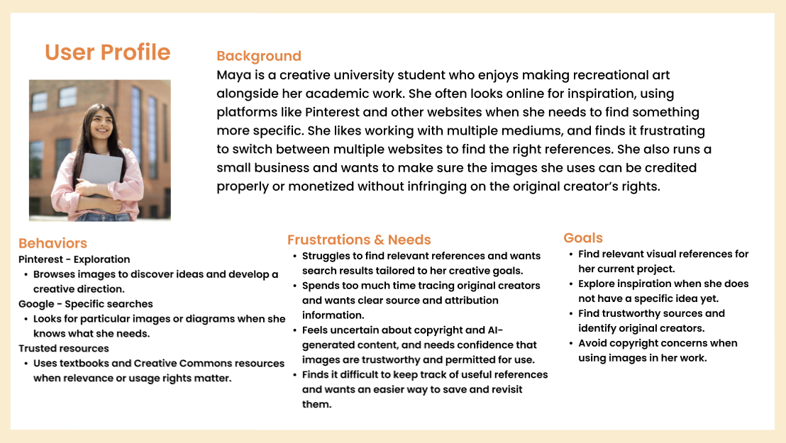
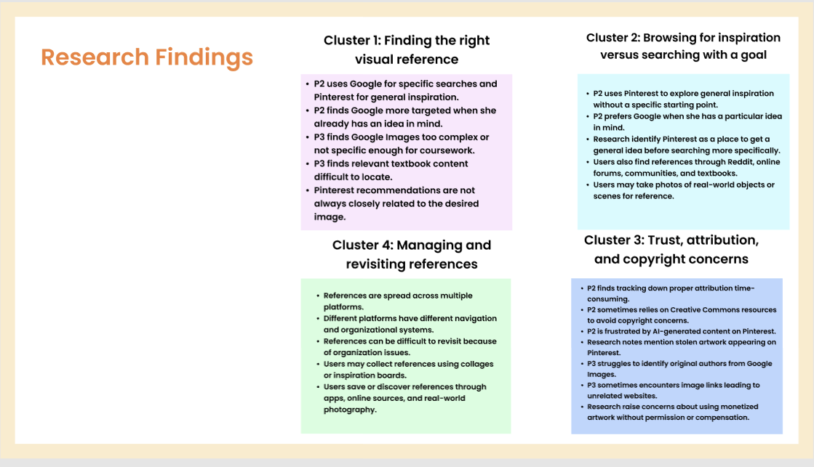
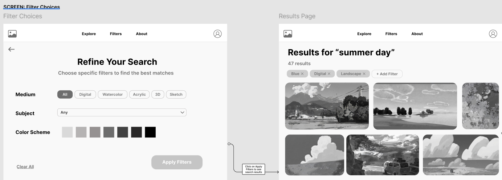
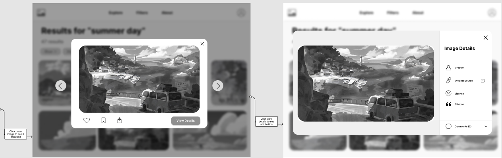

Gather is an AI-powered visual discovery concept that makes finding relevant images and creative inspiration easier. Instead of broad keyword searches, it uses personalized filters to refine results around a person's visual preferences and creative direction, so less time goes to sorting through results that don't fit.
Overview
Making visual search focused instead of broad
Finding the right reference image is still mostly keyword guesswork: you search, scroll past dozens of near-misses, and jump between Pinterest, Google, and other sites to find something specific. Gather explores how AI-driven personalization and smart filtering could make that experience more intuitive and tailored, surfacing images that match a user's actual visual direction rather than just the words they typed.
I began Gather through the Bits of Good design program and grounded it in preliminary user research before designing anything. The mid-fidelity Figma flow below is the current stage.
01 · Research
Who it's for
I started from a user profile built from preliminary research. Maya is a creative university student who makes recreational art and runs a small business, so she needs inspiration and references she can trust and credit properly. Her frustrations shaped Gather directly: tailored results, clear sourcing, and an easier way to keep track of references.

01 · Research
What the research told me
I synthesized the research into four clusters. Together they frame the whole problem: people switch tools depending on whether they're exploring or searching with a goal, references end up scattered and hard to revisit, and trust, attribution, and copyright are a recurring worry.
Finding the right reference
Google works when users already know what they want; Pinterest for open inspiration, but recommendations often miss the mark.
Browsing vs. searching with a goal
People explore without a starting point, then switch to targeted search once they have an idea, across Pinterest, Google, Reddit, and more.
Trust, attribution & copyright
Tracking down proper attribution is time-consuming; users worry about stolen or AI-generated work and identifying original creators.
Managing & revisiting references
References are spread across platforms with different systems, making them hard to save and come back to.

02 · Design
Mid-fidelity flow
The mid-fi design turns those findings into a single flow: start a search, let AI help narrow it, apply specific filters, browse results, and open an image to see its source and attribution. Each screen answers a frustration from the research.



Where it stands. Gather is a mid-fidelity Figma concept backed by real research: a user profile and four insight clusters that each map to a screen in the flow. The clearest thread is attribution, the research surfaced it as a genuine pain, and the design makes a creator, source, and license part of every image rather than an afterthought. The next step is moving from mid-fi to higher-fidelity screens and testing the flow with users.